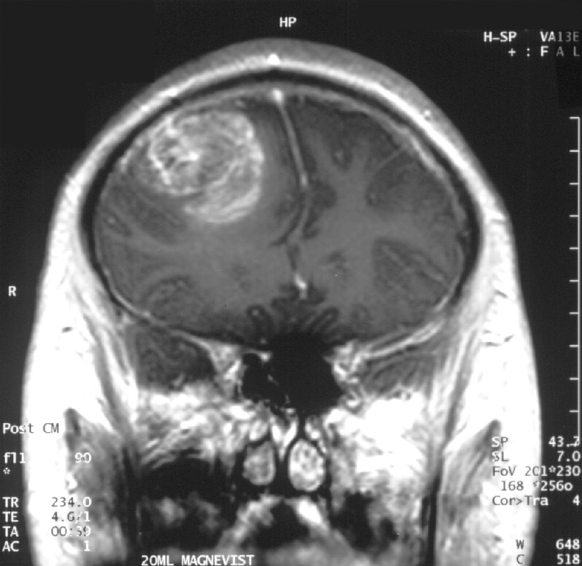

General information only. It does not replace advice from a health professional. For sudden neurological symptoms, call emergency services.


What they are
Brain tumours are abnormal growths of cells inside the skull. They can be primary, if they arise in the brain itself or its coverings, or secondary (metastases), if they come from a cancer elsewhere in the body. Metastases are in fact the most common brain tumours in adults: they appear in 20-40% of people with cancer, especially of the lung, breast, melanoma and kidney.
Primary tumours affect about 25 people per 100,000 each year. They are the most common solid tumour in childhood. Some are benign (they do not invade or spread) and others malignant, although even a benign tumour can be serious because of where it is inside the skull, a closed space.
Main types
| Tumour | Comment |
|---|---|
| Meningioma | The most common primary tumour (over a third). It arises from the meninges, is almost always benign and slow-growing. More common in older women |
| Glioblastoma | The most common and aggressive malignant primary tumour in adults (grade 4) |
| Other gliomas | Astrocytomas and oligodendrogliomas, grades 2 to 4; often with mutations in the IDH gene, which carry a better outlook |
| Pituitary adenoma | Benign; can affect hormones or vision |
| Vestibular schwannoma | Benign, on the balance nerve: hearing loss in one ear and tinnitus |
| Primary brain lymphoma | More common in people with weakened immunity and older people |
| Medulloblastoma | The most common malignant tumour in children, in the cerebellum |
The 2021 WHO classification is based on the molecular features of the tumour, which influence outlook and treatment.
Symptoms
They depend on the location, size and growth rate:
- New seizures in an adult: often the first symptom.
- Progressive headache, worse in the morning or when coughing, with nausea or vomiting, due to raised intracranial pressure. Although it is a common symptom, the vast majority of headaches are not caused by a tumour.
- Focal symptoms that progress over weeks: weakness on one side, problems with language or vision, unsteadiness.
- Personality changes, confusion, apathy or memory problems (especially in frontal tumours).
- Hormonal changes with pituitary tumours.
Diagnosis
- Contrast-enhanced MRI, the key test; sometimes with spectroscopy, perfusion or PET.
- Biopsy or surgery for the definitive diagnosis and molecular analysis.
- For metastases, staging of the cancer.
Treatment
It is decided in multidisciplinary neuro-oncology teams.
- Surgery: remove as much of the tumour as possible without damaging important functions, helped by neuronavigation, awake surgery to protect language, 5-ALA fluorescence and monitoring. See neurosurgery.
- Radiotherapy, including radiosurgery for small metastases and some benign tumours.
- Chemotherapy: temozolomide for gliomas; its effectiveness depends on the methylation status of the MGMT gene.
- Targeted therapies: vorasidenib, approved in 2024, delays progression of low-grade gliomas with an IDH mutation. For metastases, targeted drugs and immunotherapy that cross the blood-brain barrier.
- Tumour treating fields (TTFields) for glioblastoma.
- Dexamethasone to reduce swelling, and antiseizure medicines if there are seizures.
- Many small meningiomas without symptoms are just monitored with regular MRI scans.
Outlook
It varies enormously: an operated meningioma can be cured, whereas glioblastoma has an average survival of about 15-20 months with treatment. Research is advancing in vaccines, cell therapies (CAR-T) and new techniques to cross the blood-brain barrier, such as focused ultrasound.
Sources
- Louis DN, et al. The 2021 WHO Classification of Tumors of the Central Nervous System. Neuro Oncol. 2021;23:1231-51.
- Weller M, et al. EANO guidelines on the diagnosis and treatment of diffuse gliomas of adulthood. Nat Rev Clin Oncol. 2021;18:170-86.
- Stupp R, et al. Radiotherapy plus concomitant and adjuvant temozolomide for glioblastoma. N Engl J Med. 2005;352:987-96.
- Mellinghoff IK, et al. Vorasidenib in IDH1- or IDH2-mutant low-grade glioma (INDIGO). N Engl J Med. 2023;389:589-601.
- Ostrom QT, et al. CBTRUS Statistical Report: primary brain and other CNS tumors. Neuro Oncol. 2023;25:iv1-iv99.